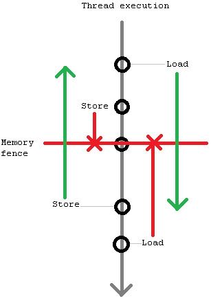
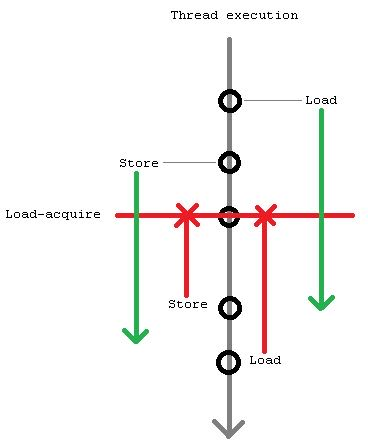

# 1024 cores Lock-Free Algorithms
Table of Contents
各种Lock-Free Queue实现 https://www.1024cores.net/home/lock-free-algorithms/queues
1. lock-Free/wait-Free 之间如何进行选择
https://www.1024cores.net/home/lock-free-algorithms/introduction
选择这些算法并不是因为performance, 选择了lock-free并不意味着性能就会更好。
Practical Implications
Don't get it as it's impossible to create mutex-based programs what make forward progress. It's indeed possible to create mutex-based programs that do make eventual forward progress, and there are zillions of examples of it out there. Wait-freedom, loсk-freedom are theoretical properties that consider kind of corner cases. However, there are some practical implications as well:
- With lockfree algorithms a thread that can make forward progress is always one of the currently running threads, and thus it actually makes forward progress. With mutex-based algorithms there is also usually a thread that can make forward progress, however it may be a currently non-running thread, and thus no actual forward progress happens (at least until, for example, a page will be loaded from disk and/or several context switches happen and/or some amount of active spinning happens).
- Waitfree, lockfree algorithms can be used in some contexts where lock-based algorithms can not be used. For example, it's generally unsafe to use locks in signal handlers, because the lock can be currently acquired by the preempted thread, and it instantly leads to a deadlock. Another example is hard real-time systems, where wait-free algorithms are preferable because of strict upper bounds on execution time.
- In some systems (most notably in multi-process systems that use inter-process shared memory for communication) threads can be unexpectedly terminated due to timeouts, fatal failures or by operator's command. In such systems mutexes are inherently unsafe to use, because, if a terminated thread holds a mutex, the mutex will be never released (yes, there are so called robust mutexes, but that's another story, and in the end they still require usage of lockfree algorithms or something like that).
Performance/scalability
As you may have noticed, I did not say anything about performance yet. That's right - the terms are about forward progress guarantees, and are orthogonal to performance. Of course, some lockfree algorithms are faster than mutex-based algorithms, but only by accident. In general lockfree algorithms are slower than analogous algorithms not burdened with forward progress guarantees (think of Quality-Of-Service vs. Best-Effort). Let me refine the point, here I am looking from the point of view of what guarantee your system requires. Lockfree is a subset of blocking (stricter guarantee), so if your system is Ok with blocking (does not require any particular forward progress guarantees), then you can choose the fastest algorithm from blocking/lockfree/wait-free. If your system requires lockfree forward progress guarantees, then you can choose only from lockfree/waitfree. And if your system requires wait-free guarantees, then you can choose only from wait-free algorithms. So blocking is at least as fast as lockfree, while it can be faster (when it happened so that the fastest known algorithm is at least partially blocking).
2. write sharing 对于扩展性影响是最大的
https://www.1024cores.net/home/lock-free-algorithms/first-things-first
So, what conclusions can we make?
First, if there is write sharing system ungracefully degrades, the more threads we add the slower it becomes.
Second, if there is no write sharing system linearly scales. Yes, atomic RMW operations are slower than plain stores and loads, but they do scale linearly in itself (by the way, cost of atomic RMW operations becomes smaller and smaller with each new processor generation, there are no fundamental reasons why they must be any slower and similar non-atomic read-modify-write sequence).
Third, loads are always scalable. Several threads are able to read a memory location simultaneously. Read-only accesses are your best friends in a concurrent environment.
If I would be asked to choose a single thing that you will get away, I undoubtedly would choose exactly this - the negative effect of write sharing on scalability.
3. memory model 是个不断被重载的名词
https://www.1024cores.net/home/lock-free-algorithms/so-what-is-a-memory-model-and-how-to-cook-it
A memory model in general is a very broad term, and it determines a lot of things. For example, such an evident thing like pointer size (8, 16, 32, 64 bits) is determined by a memory model. Another good example is what is (was) called… well, a memory model, if you remember those days, - TINY, SMALL, COMPACT, LARGE, FLAT. There are also other things like segmentation, paging and cache associativity.
What I am going to discuss here is memory models in the context of multi-threading/concurrency. There are 3 fundamental properties: Atomicity, Ordering and Visibility; and 2 levels: Compiler and Hardware. In order to implement and reason about any synchronization algorithm you need clear understanding of them.
3.1. __atomicity__
CAS操作通常取决于内存变量宽度(32bit/64bit/128bit), 有些架构还可以同时操作两个不相邻的内存变量
There is also mostly mythical double-CAS (DCAS, or CAS2) which can operate on 2 disjoint work-sized memory locations - not available on most modern commodity hardware (however, you may encounter it in academic papers on lock-free algorithms).
对于x86-64而言，1/2/4/8/16字节aligned的load/store都是原子性的。atomic load/store和是否提供CAS同样重要，因为wait-free算法会使用到
Regarding loads and stores. Memory model along with instruction set specifies whether plain loads and stores are atomic or not. Typical guarantee for all modern commodity hardware is that aligned word-sized loads and stores are atomic. For example, on x86 architecture (IA-32 and Intel 64) 1-, 2-, 4-, 8- and 16-byte aligned loads and stores are all atomic (that is, plain MOV instruction, MOVQ and MOVDQA are atomic).
3.2. __visibility__
不太理解下面这段话的意思，如果cache-coherent可以自动工作的话，那么为什么还需要memory barrier? (这个可能和ordering差别还不大，对于visibility实际上开发者没有太多控制)
对于non-temporal store需要显式地加入memory fence指令
Visibility determines when other threads will see changes made by the current thread, and whether they will see them at all. A lot of people endeavour to do something special in order to ensure visibility (like placing memory fences). However, in practice it's the most boring property, because on cache-coherent architectures (read - on all modern commodity architectures - IA-32, Intel 64, IA-64, SPARC, POWER) visibility is ensured automatically. Namely, each write is automatically propagated to all other processors/cores in a best-effort manner. There are no ways to prevent nor to speed it up. Period.
On non cache-coherent architectures changes are indeed not propagated automatically, and you need to do something special. However, such architectures are rare and unique (I saw no such archs), so I think there is no sense in discussing them in general.
However, there is an interesting deviation - on x86 architecture non-temporal stores (made with instructions like MOVNTDQ) and stores made to WC (Write-Combining) region of memory are effectively non cache-coherent. That is, they will be propagated to other processors/cores only before execution of SFENCE instruction, MFENCE instruction, LOCKed instruction or other serializing actions.
3.3. __ordering__
作者对于ordering的阐述，这个是开发者最关心的地方
In the context of single-threaded execution hardware provides so called sequential self-consistency, that is, for a program everything looks like all memory accesses are done in program order. In reality memory accesses can be made out of program order, however hardware masks that from a single-threaded program. For a multi-threaded program situation radically changes - threads can see each other's memory accesses in weird order. Memory access ordering is the most involved property of a memory model, and it requires the greatest amount of developer's attention.
So, a memory model determines what re-orderings are possible (relatively to program order). For required ordering ensuring hardware usually provides special instructions called memory fences/barriers, which prevent some re-ordering types around them. There are 2 types of memory fences - bi-directional (store-store, load-load) and tied to memory accesses (acquire and release). Bi-directional fences prevent one type of memory accesses (load or store) from "sinking below" them, while other type of memory accesses (can be the same, though) from "hoisting above" them. For example, store-load fence prevents stores from sinking below and loads from hoisting above (however, stores can hoist above it and loads may sink below it).
bi-directional fences是为了避免一类指令重排，比如store-load是个X，那么不允许把X之前的store挪到下面，也不允许把X之后的load挪到上面，但是X之前的load可以挪到下面，之后的load可以挪上面. 下图是 store-load

Fences tied to memory accesses prevent all memory accesses from moving above (acquire fence) or below (release fence); for example, load-acquire is a load which simultaneously prevents any other memory accesses from hoisting above it (while any memory accesses can sink below it).
tied-to-memory-access fences则是组织所有的指令重排， 比如load-acquire是X，那么这个指令本身是load指令，不允许X下面所有的内存访问放在前面，但是允许X之前的内存访问放在后面，同理store-release. 下图是 load-acquire

4. scalability prerequisites 扩展性前提
https://www.1024cores.net/home/lock-free-algorithms/scalability-prerequisites
优化fast-path，上面不要用mutex(CAS操作以及线程切换开销).
First, no mutexes on fast-paths ever (for slow-paths they are Ok, and even recommended because of the usage simplicity). There are several problems with mutexes. Mutexes limit and sacrifice concurrency to provide simplicity (anti-threads, sort of). Then, they provoke write-sharing (cache-coherence traffic) on every operation (even otherwise read-only). So, they just does not scale, forget about them.
确保逻辑read-only的操作真的是read-only. 作者那rwlock举例，read_lock可能并不是一个只读物理操作，那么就会影响扩展性。 可以看这篇文章 https://www.1024cores.net/home/lock-free-algorithms/reader-writer-problem
Second, logically read-only operations must be implemented as a physically read-only operations. So, what does it mean? During logically read-only operation one should not do any single write to a shared memory location. Note that writes may be hidden inside of some component, in particular most of the reader-writer mutexes do writes to internal state in read_lock()/read_unlock(), such writes are no less harmful. Writes to a shared state provoke cache-coherence traffic, large amounts of which quickly brings any concurrent system to it's knees.
CAS本身就有很高的代价, LOCK prefixed指令，x86有40个指令周期，但是这个周期在不断地降低。有很高代价的原因有两个：1. 锁总线（确保原子性） 2. memory fencing确保可见性，其中2是大头。
Fifth, atomic RMW operations have some fixed associated costs. For modern Intel x86 processors cost of a single atomic RMW operation (LOCK prefixed instruction) is some 40 cycles (depends on a particular model, and steadily decreases). The cost comes mostly from frequently-unneeded embed full memory fence (so when Intel will separate atomicity and memory ordering, you may cross out this rule). However, the cost is fixed and does not affect scalability, so is far less important than above-outlined scalability-affecting points. Of course, all well-known single-threaded optimization rules are still applicable too. So we may include into the fifth point also algorithmic optimality and general implementation quality.
作者总结下来，提高扩展性的箴言就是：减少cache line在线程之间的交换
The most important aggregate metric for a concurrent data structure is a mean number of cache line transfers between threads per operation.
5. false sharing 的前提是先减少sharing
https://www.1024cores.net/home/lock-free-algorithms/false-sharing---false
我们不是要先减少false sharing, 而是首选要减少sharing.
Eliminate sharing. Period. Not false sharing, just sharing. It's sharing that has huge performance penalties. It's sharing that changes linear scalability of your application to super-linear degradation. And believe me, hardware has no means to distinguish false sharing from true sharing. It can't penalize only false sharing, and handle true sharing without any performance penalties.
然后在数据结构安排上，尽可能低将一起使用的数据放在一起， 增加cache使用率
Put things that must be close to each other… close to each other. Assume following situation. In order to complete some operation thread has to update variable X and variable Y. If variables are situated far from each other (on different cache lines), then thread has to load (from main memory, or from other processor's cache) 2 cache lines instead of 1 (if variables are situated close to each other). Effectively this situation can be considered the same as false-sharing, because thread places unnecessary work on interconnects, thus degrading performance and scalability.
完全解决数据结构的排列问题之后，如果还是有sharing的需求，这个时候才是要减少false sharing.
Do pay attention to data layout. This was important in the 60's. This is even more important in the multicore era.
Only after that one can also add:
Sometimes sharing can show up when you are not expecting it, i.e false sharing. This is important to eliminate false sharing too… etceteras… [insert here contents of False Sharing article]